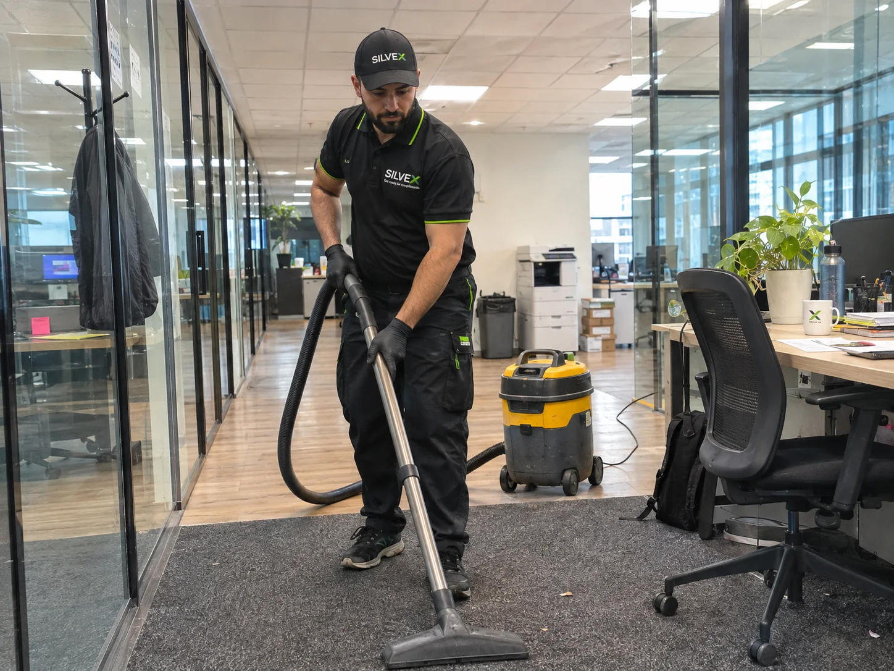
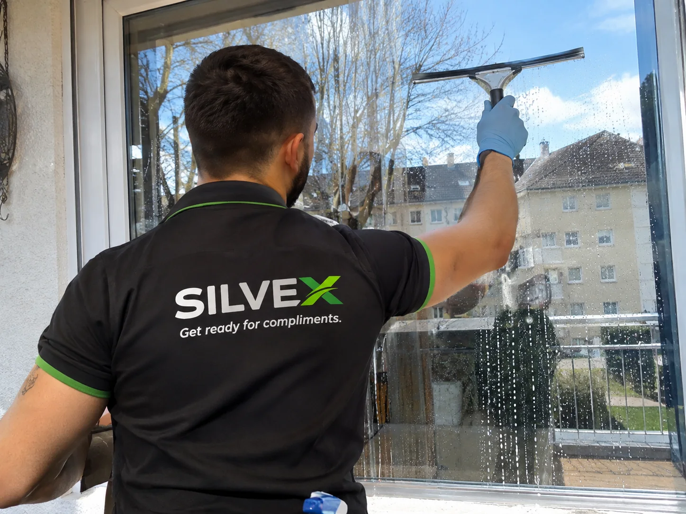
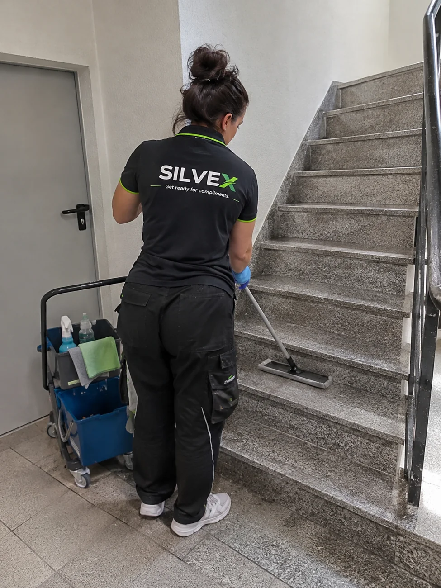
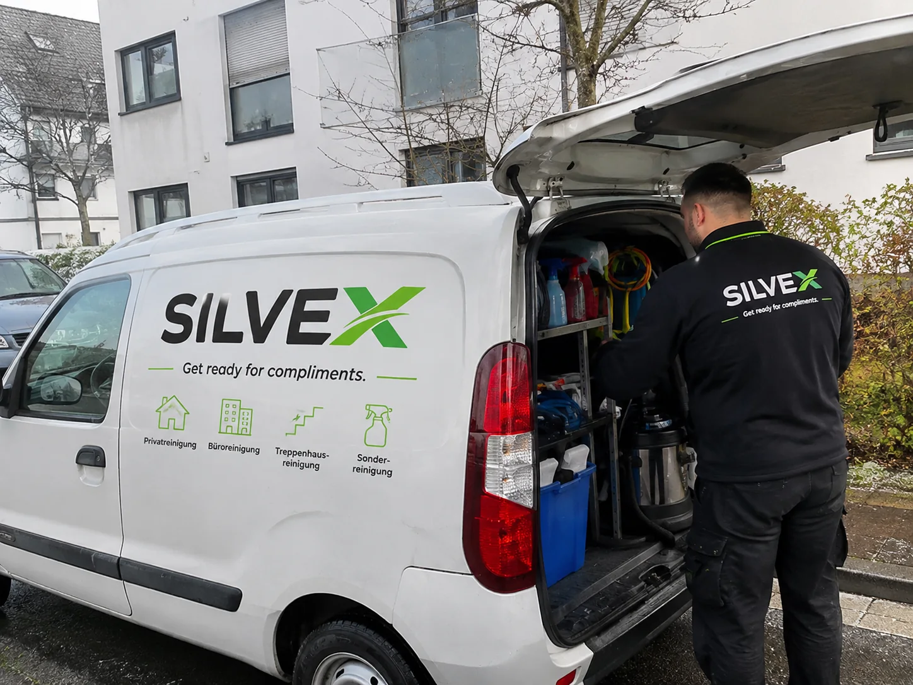

Privathaushaltsreinigung
Regelmäßige oder einmalige Reinigung, abgestimmt auf Ihren Alltag.
Professionelle Reinigung für Ihr Zuhause und Ihr Unternehmen. Persönlich, sorgfältig und mit einem Blick fürs Detail.

Ob Wohnung, Büro oder Praxis: Wir stimmen unsere Reinigung auf Ihre Räume und Ihre Wünsche ab. Klar in der Absprache, sorgfältig in der Ausführung.
Für Privatpersonen und Unternehmen. Den Umfang stimmen wir gemeinsam ab.
Regelmäßige oder einmalige Reinigung, abgestimmt auf Ihren Alltag.
Gepflegte Arbeitsplätze und ein angenehmes Umfeld.
Saubere Eingänge, Treppen und gemeinschaftliche Bereiche.
Sorgfältige Reinigung nach individuell vereinbartem Umfang.
Ein sauberer Start beim Ein- oder Auszug.
Intensive Reinigung für Räume mit besonderem Pflegebedarf.
Klare Sicht und gepflegte Glasflächen.
Besondere Anforderungen? Fragen Sie uns unverbindlich an.

Von Fenstern bis zu stark genutzten Räumen: Wir besprechen, was Sie brauchen, und erstellen ein passendes Angebot.
Fensterreinigung anfragen ↗SILVEX ist ein Reinigungsservice aus Freiburg. Wir legen Wert auf klare Absprachen, persönlichen Kontakt und einen respektvollen Umgang mit Ihren Räumen.
Jeder Auftrag ist anders. Deshalb hören wir zuerst zu und erstellen ein Angebot nach Ihrem Bedarf.
Kontakt aufnehmen ↗
Per WhatsApp, Telefon oder E-Mail.
Wir klären Räume, Umfang und Häufigkeit.
Individuell und unverbindlich.
Wir freuen uns auf Ihre Anfrage in Freiburg und Umgebung.

Erzählen Sie uns, welche Reinigung Sie benötigen. Wir freuen uns auf Ihre Anfrage.
Die Karte wird erst nach Ihrer Zustimmung geladen (OpenStreetMap).
Wählen Sie Ihren bevorzugten Kontaktweg:
WhatsApp schreiben ↗Anrufen: +49 177 6250489 ↗kontakt.silvex@gmail.com ↗Unverbindliche Anfrage · Individuelles Angebot